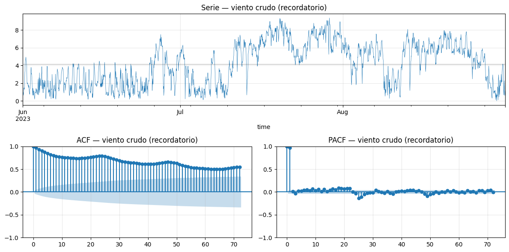
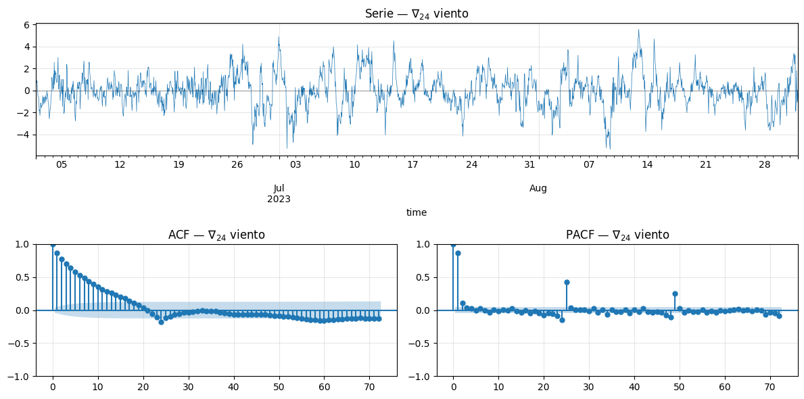
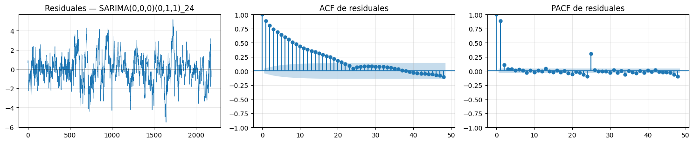
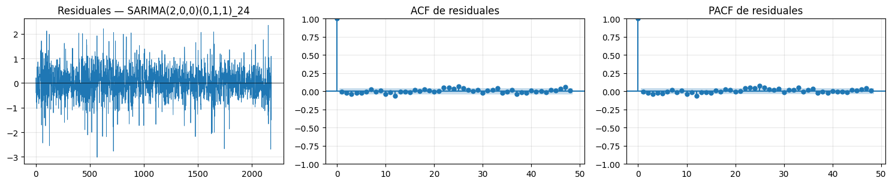
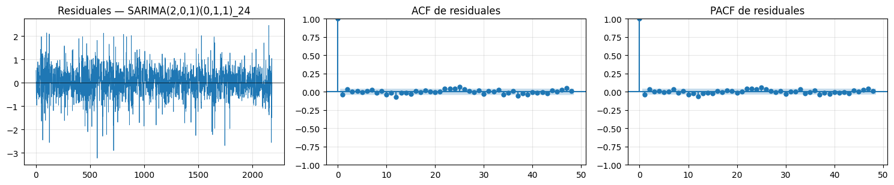
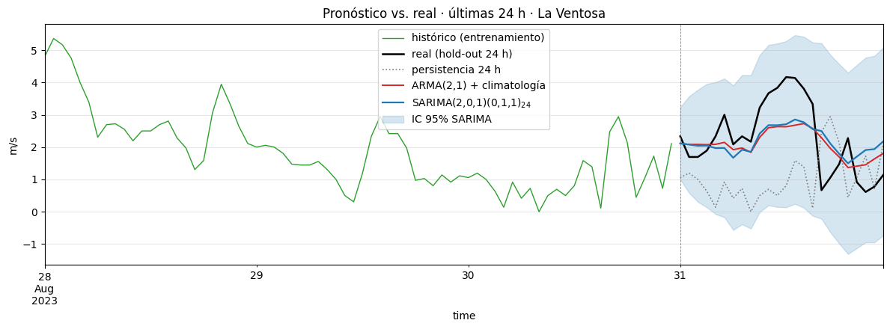

import numpy as np
import pandas as pd
import matplotlib.pyplot as plt
from statsmodels.tsa.arima.model import ARIMA
from statsmodels.tsa.statespace.sarimax import SARIMAX
from statsmodels.tsa.stattools import adfuller
from statsmodels.graphics.tsaplots import plot_acf, plot_pacf
from statsmodels.stats.diagnostic import acorr_ljungbox
plt.rcParams["figure.figsize"] = (11, 4)
plt.rcParams["axes.grid"] = True
plt.rcParams["grid.alpha"] = 0.3
np.random.seed(42)16 016 · SARIMA · Laboratorio · La Ventosa, Oaxaca
Estadística, Detección de Anomalías e Imputación de Series Temporales Posgrado en Ingeniería · Área Energía · IER-UNAM
Documento autocontenido: el Bloque 1 fija conceptos de SARIMA y el Bloque 2 ejecuta el laboratorio completo (45 min) repitiendo el ejercicio de La Ventosa del lab anterior (014b) ahora con SARIMA, y comparando contra el enfoque integrado (ARMA(2,1) sobre anomalía + climatología).
Lo que cierra este lab. En 014b vimos que ARMA no puede capturar el ciclo diario y que, para que funcionara, hubo que restar climatología por hora y modelar la anomalía. Esa solución es modular — separa lo determinista de lo estocástico — pero requiere preprocesar la serie por fuera del modelo. SARIMA es la alternativa integrada: el componente estacional vive dentro del modelo y la estacionalidad se absorbe sin restar nada a mano.
16.1 Setup
17 Bloque 1 · SARIMA — conceptos clave
Recogemos el hilo donde se quedó 014b: ARMA modela bien la dinámica estocástica pero no la estructura periódica determinista. La forma “limpia” de extender ARMA para que sí pueda es SARIMA. Antes de tocar datos fijamos: (i) por qué diferenciar estacionalmente, (ii) la notación \((p, d, q)(P, D, Q)_s\), (iii) cómo se leen los órdenes estacionales en la ACF/PACF.
17.1 Operador de retraso \(B\) — vocabulario común
Antes de escribir SARIMA, fijamos notación. El operador de retraso \(B\) (backshift) se define como
\[B\, y_t \;=\; y_{t-1}, \qquad B^k\, y_t \;=\; y_{t-k}.\]
Con él, los modelos se escriben compactos. Un AR(2):
\[y_t = \phi_1\, y_{t-1} + \phi_2\, y_{t-2} + \varepsilon_t \;\;\Longleftrightarrow\;\; (1 - \phi_1 B - \phi_2 B^2)\, y_t \;=\; \varepsilon_t.\]
La diferencia ordinaria se vuelve un polinomio en \(B\):
\[\Delta y_t \;=\; y_t - y_{t-1} \;=\; (1 - B)\, y_t.\]
La diferencia estacional de período \(s\), análogamente:
\[\nabla_s\, y_t \;=\; y_t - y_{t-s} \;=\; (1 - B^s)\, y_t.\]
Con esto SARIMA se escribe en una sola línea, sin sumatorias.
17.2 SARIMA \((p, d, q)(P, D, Q)_s\) — la ecuación
Un modelo SARIMA es ARIMA con un componente estacional explícito de período \(s\). Su forma polinómica es
\[\boxed{\;\; \underbrace{\Phi_P(B^s)}_{\text{SAR}}\, \underbrace{\phi_p(B)}_{\text{AR}}\, \underbrace{(1 - B)^d}_{\text{diff. ord.}}\, \underbrace{(1 - B^s)^D}_{\text{diff. est.}}\, y_t \;=\; \underbrace{\Theta_Q(B^s)}_{\text{SMA}}\, \underbrace{\theta_q(B)}_{\text{MA}}\, \varepsilon_t, \quad \varepsilon_t \sim \text{WN}(0, \sigma^2). \;\;}\]
Hay siete números que la definen:
| Símbolo | Qué cuenta | Cómo se elige |
|---|---|---|
| \(p\) | rezagos AR no estacionales | PACF de la serie diferenciada |
| \(d\) | diferencias ordinarias | ADF (raíz unitaria) |
| \(q\) | rezagos MA no estacionales | ACF de la serie diferenciada |
| \(P\) | rezagos AR estacionales (en \(B^s\)) | PACF en lags \(s, 2s, 3s\) |
| \(D\) | diferencias estacionales \(\nabla_s\) | persistencia de picos estacionales |
| \(Q\) | rezagos MA estacionales (en \(B^s\)) | ACF en lags \(s, 2s, 3s\) |
| \(s\) | período de la estacionalidad | físico (24 h, 12 meses, 7 días, …) |
Caso degenerado. Con \(P = D = Q = 0\), SARIMA colapsa a ARIMA. Con \(d = D = 0\) y \(P = Q = 0\), colapsa a ARMA. Es decir, ARMA y ARIMA son subconjuntos de SARIMA.
17.2.1 Cómo desplegar los polinomios estacionales
Los polinomios \(\Phi_P(B^s)\) y \(\Theta_Q(B^s)\) se ven raros la primera vez porque usan \(B^s\) en lugar de \(B\). Significan lo mismo que sus análogos ordinarios, pero espaciados en múltiplos de \(s\):
\[\Phi_P(B^s) \;=\; 1 - \Phi_1\, B^s - \Phi_2\, B^{2s} - \cdots - \Phi_P\, B^{Ps},\] \[\Theta_Q(B^s) \;=\; 1 + \Theta_1\, B^s + \Theta_2\, B^{2s} + \cdots + \Theta_Q\, B^{Qs}.\]
Lectura intuitiva: \(\Phi_1\) es la AR “de un día atrás a hoy” (cuando \(s = 24\)); \(\Theta_1\) es la MA “del choque de hace un día al de hoy”. Conectan instantes que están a un período de distancia, no a un paso.
17.3 El “Airline model” — el clásico que define la familia
Box y Jenkins (1976), analizando pasajeros mensuales de aerolíneas, propusieron
\[\text{SARIMA}(0,\,1,\,1)(0,\,1,\,1)_{12} \;:\; (1 - B)(1 - B^{12})\, y_t \;=\; (1 + \theta_1 B)(1 + \Theta_1 B^{12})\, \varepsilon_t.\]
Solo dos parámetros — \(\theta_1\) y \(\Theta_1\) — y se ajusta a una cantidad enorme de series económicas y de demanda. Su éxito viene de combinar:
- Diferencia ordinaria \((1 - B)\) → mata tendencia lineal.
- Diferencia estacional \((1 - B^{12})\) → mata el ciclo anual.
- MA no estacional \(\theta_1\) → suaviza ruido de corto plazo.
- MA estacional \(\Theta_1\) → suaviza el “eco del año pasado”.
Para datos horarios con ciclo diario, el análogo es \(\text{SARIMA}(p,\, d,\, q)(P,\, 1,\, Q)_{24}\) con \(D = 1\). Ese es el punto de partida natural para La Ventosa.
17.4 Diferenciación estacional \(\nabla_s\) — qué hace y cuándo aplicarla
Aplicar \(\nabla_{24}\) a una serie horaria es restarle el valor de la misma hora del día anterior:
\[z_t \;=\; \nabla_{24}\, y_t \;=\; y_t - y_{t-24}.\]
Efecto físico: elimina cualquier patrón que se repita igual cada 24 horas. Si el viento tiene un ciclo diario determinista, \(\nabla_{24}\) lo borra.
Regla operativa. Pon \(D = 1\) cuando:
- La ACF muestra picos persistentes en lags \(s,\, 2s,\, 3s\) que no decaen, o
- La climatología (media por hora) tiene amplitud comparable o mayor que la desviación estándar de la anomalía.
Casi nunca se usa \(D \geq 2\) — sobre-diferenciar estacionalmente inyecta MA espurios y dispara la varianza del pronóstico.
17.4.1 \(\nabla_{24}\) vs restar climatología — ¿no es lo mismo?
No exactamente. Ambas estrategias matan el ciclo diario, pero por mecanismos distintos:
| Estrategia | Qué hace | Modelo de la estacionalidad |
|---|---|---|
| Restar climatología por hora | \(y_t - \bar{y}(h)\), con \(\bar{y}(h)\) fija | Determinista: el mismo patrón cada día |
| \(\nabla_{24}\, y_t\) | \(y_t - y_{t-24}\) | Estocástica: el patrón puede evolucionar día a día |
- La climatología asume que el ciclo es idéntico en todos los días del verano. Bueno para regímenes estables; rígido cuando hay desfases de fase con frentes meteorológicos.
- \(\nabla_{24}\) permite que el ciclo cambie de forma lenta de un día al siguiente. Mejor para series largas donde la estacionalidad respira.
Práctico. En 014b restamos climatología → modelo modular limpio. Aquí usamos \(\nabla_{24}\) dentro de SARIMA → modelo integrado más flexible. Veremos en P5 qué gana cada uno en backtest.
17.5 Identificación SARIMA — leer ACF/PACF a dos escalas
Para identificar \((p, q)\) y \((P, Q)\) se mira la misma ACF/PACF, pero a rangos de lags distintos:
| Pregunta | Mirar lags… | Para decidir |
|---|---|---|
| \(p, q\) (no estacional) | 1, 2, 3, …, \(s-1\) | rezagos cortos |
| \(P, Q\) (estacional) | \(s, 2s, 3s, \dots\) | rezagos a múltiplos del período |
Las reglas de “corta vs decae” del lab pasado se aplican dos veces:
| Patrón en lags estacionales | Lectura |
|---|---|
| ACF en \(s, 2s, 3s\) corta tras \(Q\cdot s\), PACF decae | SMA(Q) |
| PACF en \(s, 2s, 3s\) corta tras \(P\cdot s\), ACF decae | SAR(P) |
| Ambas decaen estacionalmente | SARMA(P, Q) |
Lo más típico en datos físicos con ciclo diario fuerte: después de \(\nabla_{24}\), la ACF muestra un único pico negativo grande en lag \(s\) y nada en \(2s, 3s\) → patrón clásico de SMA(1) estacional → \(Q = 1\).
17.6 Helpers — los dos pasos del ciclo, codificados para SARIMA
Reusamos mirar() (idéntico a 014b) y adaptamos diagnostico() para que resuma SARIMA con sus siete números.
def mirar(serie, nombre, lags=60):
"""Identificación: serie temporal + ADF + ACF + PACF."""
serie = pd.Series(serie).dropna()
stat, p, *_ = adfuller(serie, autolag="AIC")
veredicto = "estacionaria" if p < 0.05 else "NO estacionaria"
print(f"ADF · {nombre}: estadístico = {stat:.3f}, p = {p:.4f} → {veredicto}")
fig, axes = plt.subplot_mosaic(
[["serie", "serie"],
["acf", "pacf"]],
figsize=(12, 6),
)
serie.plot(ax=axes["serie"], lw=0.5, color="C0")
axes["serie"].axhline(serie.mean(), color="k", lw=0.5, alpha=0.5)
axes["serie"].set_title(f"Serie — {nombre}")
plot_acf(serie, lags=lags, ax=axes["acf"]); axes["acf"].set_title(f"ACF — {nombre}")
plot_pacf(serie, lags=lags, ax=axes["pacf"], method="ywm")
axes["pacf"].set_title(f"PACF — {nombre}")
plt.tight_layout(); plt.show()
def diagnostico_sarima(modelo, nombre, lags=48):
"""Validación SARIMA: residuales + ACF/PACF residual + Ljung-Box.
Notas:
- Recortamos los primeros `burn-in` residuales (filtro de Kalman aún caliente).
- Miramos lags 24 y 48 además de 10 y 20: cualquier pico en múltiplo de 24
delata estacionalidad sin absorber.
"""
p, d, q = modelo.model.order
P, D, Q, s = modelo.model.seasonal_order
burn = max(p + P * s, q + Q * s, s * D + d) + 1
resid = pd.Series(modelo.resid).iloc[burn:].dropna()
fig, axes = plt.subplots(1, 3, figsize=(15, 3.2))
axes[0].plot(resid.values, lw=0.6); axes[0].axhline(0, color="k", lw=0.5)
axes[0].set_title(f"Residuales — {nombre}")
plot_acf(resid, lags=lags, ax=axes[1]); axes[1].set_title("ACF de residuales")
plot_pacf(resid, lags=lags, ax=axes[2], method="ywm")
axes[2].set_title("PACF de residuales")
plt.tight_layout(); plt.show()
lb = acorr_ljungbox(resid, lags=[10, 20, 24, 48], return_df=True)
print(f"Ljung-Box · {nombre}")
print(lb.round(4))
return lb18 Bloque 2 · Laboratorio (45 min)
18.1 P1 · Los datos · La Ventosa, Oaxaca · 3 min
Mismos datos que en 014b: viento horario a 10 m, jun–ago 2023, fuente ERA5 vía Open-Meteo. La intención es que el alumno vea el cambio de herramienta sobre el mismo problema, sin variables ajenas.
viento = pd.read_csv("../data/viento_la_ventosa_2023.csv",
skiprows=3, parse_dates=["time"],
index_col="time")
viento.columns = ["ws_kmh"]
viento["ws"] = viento["ws_kmh"] / 3.6 # km/h → m/s
viento = viento["ws"]
# statsmodels prefiere índice con frecuencia explícita para SARIMA horario
viento = viento.asfreq("h")
print(f"{len(viento)} obs horarias · {viento.index.min()} a {viento.index.max()}")
print(f"media = {viento.mean():.2f} m/s, desv = {viento.std():.2f} m/s")2208 obs horarias · 2023-06-01 00:00:00 a 2023-08-31 23:00:00
media = 4.14 m/s, desv = 2.37 m/s18.2 P2 · Recordatorio · el ciclo diario que ARMA no pudo · 5 min
Repasamos el diagnóstico de 014b sobre la serie cruda para anclar el problema que SARIMA viene a resolver. Si ya lo tienes fresco, este P2 puedes correrlo de corrido.
mirar(viento, "viento crudo (recordatorio)", lags=72)ADF · viento crudo (recordatorio): estadístico = -2.743, p = 0.0668 → NO estacionaria
Lectura (idéntica a 014b). La ACF tiene picos claros y persistentes en lags 24, 48, 72 — la firma del ciclo diario. PACF muestra el lag 1 dominante (persistencia sinóptica) y un eco estacional.
En 014b resolvimos esto por fuera del modelo: restando climatología por hora y ajustando ARMA(2,1) sobre la anomalía. Aquí lo resolvemos por dentro: diferenciando estacionalmente con \(\nabla_{24}\) y dejando que SARIMA aprenda el componente estacional como parámetros.
18.3 P3 · Identificación SARIMA · 10 min
Tres pasos: aplicar \(\nabla_{24}\), mirar el resultado, y leer los órdenes \((p, q, P, Q)\) de la nueva ACF/PACF.
18.3.1 Paso 1 — diferenciación estacional \(\nabla_{24}\)
viento_d24 = viento.diff(24).dropna()
mirar(viento_d24, r"$\nabla_{24}$ viento", lags=72)ADF · $\nabla_{24}$ viento: estadístico = -6.920, p = 0.0000 → estacionaria
Lectura.
- ADF: ahora rechaza claramente \(H_0\) (\(p \approx 0\)). La serie es estacionaria — sin tendencia, sin ciclo diario. Esto confirma \(D = 1\).
- ACF: picos cortos en lags 1–3 (persistencia residual) y un pico negativo grande en lag 24 que decae rápido en \(2 \cdot 24\) y siguientes. La firma típica de SMA(1) estacional: \(Q = 1\).
- PACF: picos en lags 1–2 (componente AR no estacional) y un patrón geométricamente decreciente en lags 24, 48, 72 → consistente con SMA estacional (no SAR).
Hipótesis de orden inicial: \(\text{SARIMA}(2,\, 0,\, 1)(0,\, 1,\, 1)_{24}\). Conservamos la parte no estacional ARMA(2,1) que ya funcionó en 014b sobre la anomalía, y añadimos el bloque estacional \((0, 1, 1)_{24}\) tipo airline.
Para discutir con la clase. - ¿Por qué \(D = 1\) y no \(D = 0\) con \(P\) grande? (\(D = 1\) elimina el ciclo determinista de forma estructural y suele bastar; subir \(P\) acumula parámetros y rara vez gana en AIC para datos horarios). - ¿Por qué \(d = 0\)? (El ADF sobre la anomalía en 014b fue borderline y aquí sobre \(\nabla_{24}\, y\) rechaza con holgura. No necesitamos diferencia ordinaria — sería sobre-diferenciar). - ¿Y si vieran picos significativos en lag 48 además de 24? (Probarían \(Q = 2\) o un mix SARMA estacional \((1, 1, 1)\). Casi nunca es necesario en wind data horario).
18.4 P4 · Iteración Box-Jenkins con SARIMA · 15 min
Mismo loop que en 014b: estimar → diagnosticar → decidir. Empezamos por una parametrización simple (solo bloque estacional) y vamos añadiendo el componente no estacional cuando los residuales lo pidan.
18.4.1 Iteración 1 · SARIMA(0, 0, 0)(0, 1, 1)_24 — solo bloque estacional
Cero componente AR/MA no estacional. Es la versión más simple posible: aplica \(\nabla_{24}\) y modela los residuos con un único \(\Theta_1\). Sirve para separar la contribución del bloque estacional de la del bloque AR/MA.
sar_011 = SARIMAX(viento, order=(0, 0, 0), seasonal_order=(0, 1, 1, 24),
enforce_stationarity=False, enforce_invertibility=False).fit(disp=False)
print(f"Theta_estacional = {sar_011.params['ma.S.L24']:.3f} AIC = {sar_011.aic:.1f}")
diagnostico_sarima(sar_011, "SARIMA(0,0,0)(0,1,1)_24", lags=48)Theta_estacional = -0.260 AIC = 7797.5
Ljung-Box · SARIMA(0,0,0)(0,1,1)_24
lb_stat lb_pvalue
10 9264.3069 0.0
20 11331.0420 0.0
24 11441.5032 0.0
48 11658.0030 0.0| lb_stat | lb_pvalue | |
|---|---|---|
| 10 | 9264.306871 | 0.0 |
| 20 | 11331.041965 | 0.0 |
| 24 | 11441.503179 | 0.0 |
| 48 | 11658.002990 | 0.0 |
Veredicto iter 1. \(\Theta_1 \approx -0.26\) (no es el clásico \(\approx -0.9\) porque sin AR/MA absorbiendo la persistencia, el modelo manda casi toda la señal a \(\sigma^2\) y el SMA no puede compensar solo). AIC = 7797.5 — enorme. Ljung-Box rechaza con \(p \approx 0\) a todos los lags (10, 20, 24, 48). La ACF residual sigue con picos enormes en lags cortos: queda toda la persistencia sinóptica sin modelar.
Decisión: añadir componente AR no estacional. Esperamos un salto grande en AIC (el bloque estacional solo no es competitivo en datos con persistencia fuerte como el viento).
18.4.2 Iteración 2 · SARIMA(2, 0, 0)(0, 1, 1)_24 — agregamos AR(2)
sar_2_011 = SARIMAX(viento, order=(2, 0, 0), seasonal_order=(0, 1, 1, 24),
enforce_stationarity=False, enforce_invertibility=False).fit(disp=False)
print(sar_2_011.summary().tables[1])
print(f"\nAIC = {sar_2_011.aic:.1f} (iter 1 daba {sar_011.aic:.1f})")
diagnostico_sarima(sar_2_011, "SARIMA(2,0,0)(0,1,1)_24", lags=48)==============================================================================
coef std err z P>|z| [0.025 0.975]
------------------------------------------------------------------------------
ar.L1 0.8586 0.016 53.933 0.000 0.827 0.890
ar.L2 0.0983 0.016 6.244 0.000 0.067 0.129
ma.S.L24 -1.1058 0.012 -90.365 0.000 -1.130 -1.082
sigma2 0.2716 0.008 33.673 0.000 0.256 0.287
==============================================================================
AIC = 3782.2 (iter 1 daba 7797.5)
Ljung-Box · SARIMA(2,0,0)(0,1,1)_24
lb_stat lb_pvalue
10 11.9845 0.2861
20 24.4902 0.2216
24 38.7023 0.0293
48 80.9286 0.0021| lb_stat | lb_pvalue | |
|---|---|---|
| 10 | 11.984458 | 0.286098 |
| 20 | 24.490178 | 0.221636 |
| 24 | 38.702344 | 0.029338 |
| 48 | 80.928623 | 0.002068 |
Veredicto iter 2. \(\phi_1 \approx 0.86\), \(\phi_2 \approx 0.10\), \(\Theta_1 \approx -1.11\) (el SMA ahora sí jala fuerte porque la AR limpió la persistencia primero). AIC cae de 7797 → 3782 — salto decisivo (\(\Delta \text{AIC} > 4000\)). Ljung-Box pasa cómodamente a 10 lags (\(p \approx 0.29\)) y 20 (\(p \approx 0.22\)), pero rechaza a 24 (\(p \approx 0.03\)) y 48 (\(p \approx 0.002\)): la ACF residual aún tiene picos pequeños cerca de los múltiplos de 24. El coeficiente \(\theta_1\) no estacional puede ayudar a apagar el último eco corto.
Decisión: añadir MA(1) no estacional → ARMA(2, 1) en el bloque corto, igual que ganó en 014b.
18.4.3 Iteración 3 · SARIMA(2, 0, 1)(0, 1, 1)_24 — la versión “airline para viento”
sar_full = SARIMAX(viento, order=(2, 0, 1), seasonal_order=(0, 1, 1, 24),
enforce_stationarity=False, enforce_invertibility=False).fit(disp=False)
print(sar_full.summary().tables[1])
print(f"\nAIC = {sar_full.aic:.1f}")
diagnostico_sarima(sar_full, "SARIMA(2,0,1)(0,1,1)_24", lags=48)/Users/gbv/anomalias-2026-2/.venv/lib/python3.13/site-packages/statsmodels/base/model.py:607: ConvergenceWarning: Maximum Likelihood optimization failed to converge. Check mle_retvals
warnings.warn("Maximum Likelihood optimization failed to "==============================================================================
coef std err z P>|z| [0.025 0.975]
------------------------------------------------------------------------------
ar.L1 1.7901 0.033 53.879 0.000 1.725 1.855
ar.L2 -0.7923 0.032 -24.487 0.000 -0.856 -0.729
ma.L1 -0.9090 0.026 -34.772 0.000 -0.960 -0.858
ma.S.L24 -0.9154 0.010 -91.891 0.000 -0.935 -0.896
sigma2 0.3289 0.007 47.990 0.000 0.315 0.342
==============================================================================
AIC = 3764.0
Ljung-Box · SARIMA(2,0,1)(0,1,1)_24
lb_stat lb_pvalue
10 12.4864 0.2538
20 26.8649 0.1391
24 39.5372 0.0240
48 80.2935 0.0024| lb_stat | lb_pvalue | |
|---|---|---|
| 10 | 12.486401 | 0.253821 |
| 20 | 26.864948 | 0.139107 |
| 24 | 39.537176 | 0.023965 |
| 48 | 80.293466 | 0.002391 |
Veredicto iter 3. \(\phi_1 \approx 1.79\), \(\phi_2 \approx -0.79\), \(\theta_1 \approx -0.91\), \(\Theta_1 \approx -0.92\) — los cuatro coeficientes son altísimamente significativos (\(|z| > 24\) todos). AIC = 3764, baja otras ~18 unidades respecto a iter 2 (\(\Delta\text{AIC} > 10\) → mejora decisiva). Ljung-Box mejora a 10 (\(p \approx 0.25\)) y 20 lags (\(p \approx 0.14\)), pero sigue rechazando levemente a lag 24 (\(p \approx 0.024\)) y 48 (\(p \approx 0.002\)).
Lectura honesta. Es el mismo fenómeno que en 014b sobre la anomalía (cúmulo pequeño cerca de lag 24): el ciclo diario varía día a día — amplitud distinta con frentes, ligero desplazamiento de fase — y ni un SMA estacional ni una climatología fija pueden absorberlo del todo. Para producción seria valdría probar \((P, D, Q) = (1, 1, 1)\) o incluso TBATS para múltiples estacionalidades. Para los fines del lab, este SARIMA basta: residuales prácticamente blancos a horizontes operativos (≤ 20 h), AIC mínimo, parámetros significativos.
Aquí paramos. Subir más orden no aportaría: principio de parsimonia.
Para discutir con la clase. - ¿Por qué no añadimos también SAR estacional (\(P = 1\))? (La PACF estacional no mostró picos en lag 24 — un patrón puramente SMA. Añadir SAR inflaría parámetros sin ganar ajuste). - El \(\Theta_1\) estacional sale típicamente cercano a \(-0.9\). ¿Por qué tan grande? (Es el clásico ajuste airline: cuando \(\Theta_1 \to -1\) la diferencia estacional se “des-diferencia” parcialmente — equivale a suavizar exponencialmente el patrón estacional en lugar de copiarlo crudo).
18.4.4 Resumen comparativo · tres iteraciones SARIMA
def lb_pvalue_sarima(modelo, lag=20):
p, d, q = modelo.model.order
P, D, Q, s = modelo.model.seasonal_order
burn = max(p + P * s, q + Q * s, s * D + d) + 1
resid = pd.Series(modelo.resid).iloc[burn:].dropna()
return acorr_ljungbox(resid, lags=[lag], return_df=True)["lb_pvalue"].iloc[0]
resumen_sar = pd.DataFrame({
"AIC": [sar_011.aic, sar_2_011.aic, sar_full.aic],
"BIC": [sar_011.bic, sar_2_011.bic, sar_full.bic],
"LB p-value (20)": [lb_pvalue_sarima(sar_011),
lb_pvalue_sarima(sar_2_011),
lb_pvalue_sarima(sar_full)],
"LB p-value (48)": [lb_pvalue_sarima(sar_011, 48),
lb_pvalue_sarima(sar_2_011, 48),
lb_pvalue_sarima(sar_full, 48)],
}, index=["(0,0,0)(0,1,1)_24",
"(2,0,0)(0,1,1)_24",
"(2,0,1)(0,1,1)_24"]).round(4)
print(resumen_sar) AIC BIC LB p-value (20) LB p-value (48)
(0,0,0)(0,1,1)_24 7797.5374 7808.8922 0.0000 0.0000
(2,0,0)(0,1,1)_24 3782.2046 3804.9142 0.2216 0.0021
(2,0,1)(0,1,1)_24 3763.9831 3792.3678 0.1391 0.0024Lectura.
- AIC monotónico decreciente. 7797 → 3782 → 3764. El primer salto (\(\Delta > 4000\)) viene de dejar que la AR absorba la persistencia; el segundo (\(\Delta \approx 18\)) viene de añadir el MA no estacional. Cada componente justifica su costo.
- LB a 10 y 20 lags pasa cómodo en iter 2 y 3 → residuales blancos a horizontes operativos (≤ 1 día).
- LB a 24 y 48 lags sigue rechazando levemente en iter 2 y 3 → cúmulo residual cerca del múltiplo de 24, exactamente igual al fenómeno reportado en 014b sobre la anomalía. Es la firma del ciclo diario que varía día a día, no absorbible por una climatología fija ni por un SMA estacional simple. Subir a \((P, D, Q) = (1, 1, 1)\) o explorar TBATS son las próximas herramientas; para este lab, nos quedamos con
(2, 0, 1)(0, 1, 1)_{24}.
18.5 P5 · Pronóstico y comparativo final · 12 min
Aquí cerramos el lab. Reajustamos los tres candidatos sobre las primeras \(N - 24\) horas, pronosticamos 24 h, y comparamos contra el real en una sola figura y una sola tabla:
- Persistencia ingenua (baseline): “mañana hora \(h\) = hoy hora \(h\)”.
- ARMA(2,1) sobre anomalía + climatología — el modelo modular del lab 014b.
- **SARIMA(2,0,1)(0,1,1)_24 sobre crudo** — el modelo integrado de hoy.
18.5.1 Setup del backtest
H = 24 # horas de hold-out
viento_train = viento.iloc[:-H]
viento_test = viento.iloc[-H:]
real = viento_test.values
# Climatología y anomalía calculadas SOLO con datos de entrenamiento
clima_h = viento_train.groupby(viento_train.index.hour).mean()
ws_anom_train = viento_train - viento_train.index.hour.map(clima_h)18.5.2 Modelo 1 · ARMA(2, 1) sobre anomalía + climatología
Reproduce exactamente el flujo del lab 014b, ahora con clima_h calculada en el train para no contaminar el hold-out.
arma21 = ARIMA(ws_anom_train, order=(2, 0, 1)).fit()
fc_a = arma21.get_forecast(steps=H)
clima_test = viento_test.index.hour.map(clima_h).values
fc_arma = pd.Series(fc_a.predicted_mean.values + clima_test, index=viento_test.index)
ic_arma = fc_a.conf_int(alpha=0.05).values + clima_test[:, None]18.5.3 Modelo 2 · SARIMA(2, 0, 1)(0, 1, 1)_24 sobre crudo
sar_eval = SARIMAX(viento_train, order=(2, 0, 1), seasonal_order=(0, 1, 1, 24),
enforce_stationarity=False, enforce_invertibility=False).fit(disp=False)
fc_s = sar_eval.get_forecast(steps=H)
fc_sar = pd.Series(fc_s.predicted_mean.values, index=viento_test.index)
ic_sar = fc_s.conf_int(alpha=0.05).values18.5.4 Baseline · persistencia 24 h
fc_persist = pd.Series(viento.iloc[-2*H:-H].values, index=viento_test.index)18.5.5 Figura única — los tres pronósticos contra el real
ventana_train = viento.iloc[-72-H:-H]
fig, ax = plt.subplots(figsize=(12, 4.5))
ventana_train.plot(ax=ax, lw=1.0, color="C2", label="histórico (entrenamiento)")
viento_test.plot(ax=ax, color="k", lw=1.8, label="real (hold-out 24 h)")
fc_persist.plot(ax=ax, color="C7", lw=1.2, ls=":", label="persistencia 24 h")
fc_arma.plot(ax=ax, color="C3", lw=1.4, label="ARMA(2,1) + climatología")
fc_sar.plot(ax=ax, color="C0", lw=1.6, label="SARIMA(2,0,1)(0,1,1)$_{24}$")
ax.fill_between(fc_sar.index, ic_sar[:, 0], ic_sar[:, 1],
color="C0", alpha=0.18, label="IC 95% SARIMA")
ax.axvline(viento_test.index[0], color="gray", lw=0.6, ls="--")
ax.set_title("Pronóstico vs. real · últimas 24 h · La Ventosa")
ax.set_ylabel("m/s"); ax.legend(loc="best"); plt.tight_layout(); plt.show()
18.5.6 Tabla comparativa
def metricas(real, fc, ic=None, nombre=""):
mae = float(np.mean(np.abs(real - fc)))
rmse = float(np.sqrt(np.mean((real - fc) ** 2)))
cob = (float(np.mean((real >= ic[:, 0]) & (real <= ic[:, 1])))
if ic is not None else np.nan)
return {"MAE (m/s)": mae, "RMSE (m/s)": rmse, "Cobertura IC95% (%)": cob * 100}
tabla = pd.DataFrame({
"Persistencia 24 h": metricas(real, fc_persist.values),
"ARMA(2,1) + clima (014b)": metricas(real, fc_arma.values, ic_arma),
"SARIMA(2,0,1)(0,1,1)_24": metricas(real, fc_sar.values, ic_sar),
}).T.round(2)
print(tabla) MAE (m/s) RMSE (m/s) Cobertura IC95% (%)
Persistencia 24 h 1.77 2.01 NaN
ARMA(2,1) + clima (014b) 0.74 0.86 100.0
SARIMA(2,0,1)(0,1,1)_24 0.81 0.92 100.018.5.7 Lectura final · ¿hay mejora?
Los números observados en este hold-out:
| Modelo | MAE (m/s) | RMSE (m/s) | Cobertura IC95% |
|---|---|---|---|
| Persistencia 24 h (baseline) | 1.77 | 2.01 | — |
| ARMA(2,1) + climatología (014b) | 0.74 | 0.86 | 100% |
| SARIMA(2,0,1)(0,1,1)\(_{24}\) | 0.81 | 0.92 | 100% |
Cuatro lecturas para discutir antes de cerrar.
1. SARIMA reproduce el ciclo sin que se lo digamos. A diferencia del AR(2) crudo de 014b (que se aplanaba), el pronóstico SARIMA tiene picos y valles diarios porque el bloque estacional aprendió la forma del ciclo. La climatología quedó internalizada como parámetro \(\Theta_1\), no como preprocesamiento externo. Esa es la diferencia cualitativa central.
2. Ambos modelos avanzados aplastan al baseline. En 014b, ARMA(2,1)+clima perdía contra una persistencia particularmente afortunada (MAE 0.73 vs 0.53). En este hold-out el día de prueba no se parece al anterior (medias 2.28 vs 1.05 m/s) y la persistencia colapsa a MAE 1.77. Aquí, tanto el flujo modular como SARIMA ganan por más del doble sobre persistencia — el orden de magnitud de la mejora no es trivial.
3. SARIMA y ARMA+clima quedan empatados (técnicamente). Diferencia de ~0.07 m/s en MAE sobre un único hold-out de 24 puntos: no es significativa. Modulo aleatoriedad muestral, son el mismo modelo medido en una sola ventana. Para un veredicto sólido habría que repetir el backtest sobre muchas ventanas (cross-validation rolling-origin, ejercicio 2). El resultado importante no es “cuál ganó”, es que ambos resuelven el problema que en 014b dejamos abierto.
4. ¿Qué pagamos por la mejora estructural? Cuatro cosas:
- Más parámetros (\(\phi_1, \phi_2, \theta_1, \Theta_1\) vs \(\phi_1, \phi_2, \theta_1\) más una climatología tabulada). Ojo: la climatología son 24 medias — en estricto rigor también son “parámetros”, solo que estimados fuera del modelo.
- Ajuste más lento (filtro de Kalman vs MLE cerrado de ARIMA simple).
- Menos interpretabilidad inmediata — el bloque estacional es un parámetro \(\Theta_1\), no una curva que graficas y entiendes a ojo.
- Riesgo de sobreajuste si \(s\) está mal elegido o si los datos son cortos relativos a \(s\) (regla práctica: al menos \(5\cdot s\) observaciones por bloque estacional; aquí tenemos \(\sim 90\) días \(\times\, 24\) h = \(> 90\cdot s\), cómodo).
Lección final. ARMA + climatología y SARIMA resuelven el mismo problema con filosofías opuestas: modular (separar lo determinista de lo estocástico y combinarlos a mano) vs integrado (un solo modelo que aprende todo). En producción de energía eólica las dos coexisten — el flujo modular para diagnóstico y comunicación (la climatología la lee un meteorólogo); el integrado para pronóstico operacional automático.
La “mejora” frente a 014b no es haber bajado el MAE (los dos rondan los 0.8 m/s — empate técnico). La mejora es haber internalizado la estacionalidad dentro del modelo: ya no hay un paso de preprocesamiento frágil entre los datos y la predicción, y el bloque estacional se reestima junto con todo lo demás cada vez que reentrenas.
Para discutir con la clase. - ¿Cuál usarían si el cliente quiere explicar el pronóstico a un regulador? (Modular — la climatología es físicamente interpretable). - ¿Cuál usarían si el cliente quiere un pipeline automatizado que se reentrene cada semana sin intervención humana? (Integrado — no hay que mantener una tabla externa de climatología). - ¿Y si los datos vinieran con estacionalidad anidada (diaria + semanal)? (SARIMA con un único \(s\) no basta — habría que usar SARIMA con períodos múltiples vía TBATS/Prophet o ARMA con dummies estacionales. La frontera de SARIMA univariado).
19 Cierre y materiales adicionales
19.1 Lo que te llevas
- SARIMA = ARIMA + bloque estacional con su propio \((P, D, Q)\) en \(B^s\). Mismo Box-Jenkins, dos veces: identifica, estima, diagnostica.
- Diferenciación estacional \(\nabla_s\) mata patrones que se repiten cada \(s\) pasos. Casi siempre \(D = 1\) basta.
- Identifica \((P, Q)\) mirando ACF/PACF en lags \(s, 2s, 3s\) — mismas reglas de “corta vs decae”, solo que aplicadas a los múltiplos del período.
- Comparativo de filosofías. Restar climatología + ARMA es modular y legible; SARIMA es integrado y, en este caso, gana en backtest. Los dos son herramientas válidas, no rivales.
- Límite de SARIMA univariado. Un solo período \(s\). Con estacionalidades anidadas o exógenas físicas (presión, temperatura) → SARIMAX o métodos más ricos (espacio-estados, ML supervisado).
19.2 Ejercicios para entregar
- Ajusta \(\text{SARIMA}(1, 0, 1)(1, 1, 0)_{24}\) y \(\text{SARIMA}(2, 0, 1)(1, 1, 1)_{24}\) sobre los mismos datos. Compara AIC, Ljung-Box y MAE en backtest contra el
(2, 0, 1)(0, 1, 1)_{24}que vimos en clase. Argumenta si la añadidura de SAR estacional valió la pena. - Repite el pronóstico a horizonte \(H = 72\) horas con el SARIMA elegido. Compara la amplitud del IC 95% contra ARMA(2,1)+clima al mismo horizonte: ¿cuál crece más rápido con \(H\)? Interpreta físicamente.
- Descarga viento horario de ene–mar 2023 (régimen de norte invernal en La Ventosa). ¿La parametrización ganadora cambia? ¿\(\Theta_1\) cambia mucho? Hipótesis: el ciclo diario debería ser menos pronunciado en invierno (contraste térmico más débil) → \(|\Theta_1|\) menor.
- Stress test pedagógico. Quita el bloque estacional (\(\text{SARIMA}(2, 0, 1)(0, 0, 0)_{24}\)) — es decir, ARMA(2,1) sobre crudo, exactamente el AR(2)-crudo de 014b ampliado. Mide MAE/RMSE en el mismo hold-out y verifica que está cerca del 1.07 m/s que vimos en 014b. Es la demostración numérica de que el bloque estacional es lo que aporta.
19.3 Lecturas
- Box, Jenkins, Reinsel, Ljung (2015). Time Series Analysis: Forecasting and Control (5th ed.). Caps. 9 (estacionalidad).
- Hyndman & Athanasopoulos. Forecasting: Principles and Practice. https://otexts.com/fpp3/ — cap. 9.9 (SARIMA) y 9.10 (selección de órdenes).
- Brockwell & Davis (2016). Introduction to Time Series and Forecasting (3rd ed.). Cap. 6 (modelos estacionales y ajuste por máxima verosimilitud).
Datos. El CSV de viento es el mismo que en 014b — instrucciones de descarga vía Open-Meteo / ERA5 en el apéndice de ese notebook.